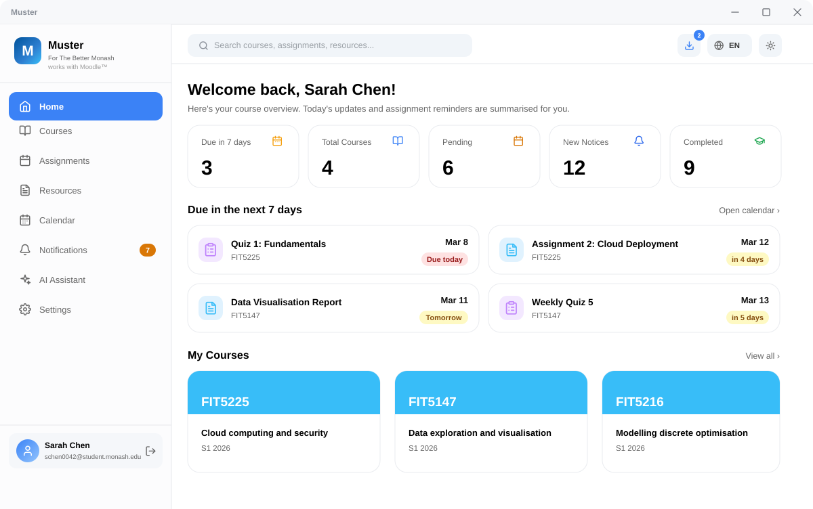
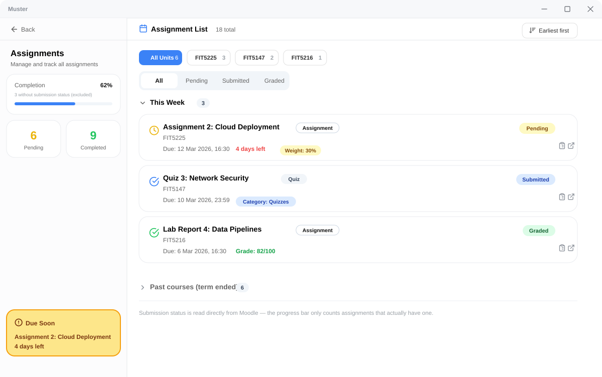
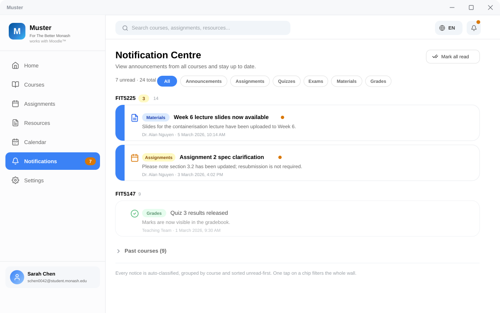
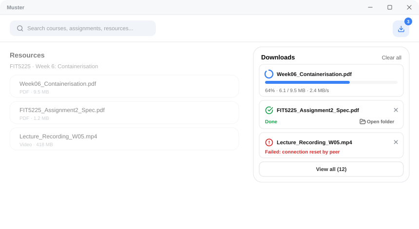

Your Moodle materials and deadlines,
brought into one desktop app
Sign in once with your Monash account, and this semester's lecture slides, notes and assignment due dates are collected automatically and ordered by urgency. There is no need to click through Moodle level by level, and everything is stored on your own computer.
Windows 10 / 11 · No sign-up required

Three steps to get started
No registration, no subscription, no forms.
Download and install
Use the button above to download, then double-click to install. Windows may display a prompt during installation; select “More info”, then “Run anyway”.
Sign in with your university account
Selecting sign-in opens the official Monash login page, exactly as when you log in to Moodle: enter your username and password, then complete phone verification. Your password is submitted directly to the university and the application never has access to it.
Materials are organised automatically
After signing in, the application retrieves this semester's slides, notes and assignment due dates for every unit and orders them by urgency. Select the items you want to keep and download them in a single batch.
Built around the most common friction each semester
No abstractions — only the steps this saves you.
Sync every unit at once
Open the application and it retrieves each week's slides, lecture links and recording entries across all your enrolled units in one pass, so there is no need to work through Moodle unit by unit and week by week. The time required depends on your enrolment load and current network conditions.
AI-generated key points
Condense dozens of slides into a single page of revision notes, in English or Chinese. It runs on your own AI account, so the cost is yours and the content is processed only on your computer.
Assignments ordered by urgency
Automatically grouped into Overdue / Today / This week / Later, with each assignment's share of the final grade shown alongside it — a figure that is often hard to locate in Moodle.
Your data stays on your own machine
Signing in opens the official Monash login page, so your password is submitted directly to the university and the application has no access to it. We also operate no servers — the materials you download and your signed-in state remain solely on your own computer.
A closer look at the screens you will actually use
Four of them, and what each one saves you.
The real submission status, not a guess
Every assignment is ordered by due date and carries the status Moodle actually reports — submitted, graded, or still outstanding. Work from last semester is filed away on its own so it stops competing for your attention.

Sorted before you even open it
Notices arrive grouped by unit, unread first, and already labelled by what they are about — an assignment, a quiz, an exam, new material or a grade. One tap on a label narrows the whole list.

This week's materials, saved in one pass
Progress, size and speed are shown while files are saved, and the folder opens as soon as a download finishes. Anything that fails says why, so you know whether to retry.

The week's reading, condensed to what matters
Choose to generate a summary and the text appears as it is written, laid out as an overview, the key materials, what is due, and what to do next. Anything falling inside the next seven days is called out. It is optional, and it follows your chosen language.
Live preview — this is the real output appearing
What becomes easier once it is installed
All situations you will genuinely encounter each semester.
Runs continuously without consuming resources
In the background it is barely noticeable and will not interfere with Zoom or other applications. Older laptops run it comfortably.
Read your notes offline
Materials you have downloaded are already stored on your computer. On a flight, on the train, or during a network outage, you can still open and review them without connecting to the campus network.
No maintenance on your part
Moodle pages are adjusted from time to time. If content can no longer be retrieved, we fix it and publish a new version — all you need to do is select update.
Questions you may have
An honest account of the points that most often give people pause.
Windows shows a warning during installation — is this a concern?
Could using it breach university rules?
Will my Monash password be stored?
Does it support all of my units?
Is there a cost? Will it be charged for later?
Install it and give the time back to study
Its purpose is to reduce the time you spend searching for course materials.
Windows 10 / 11 · No sign-up required